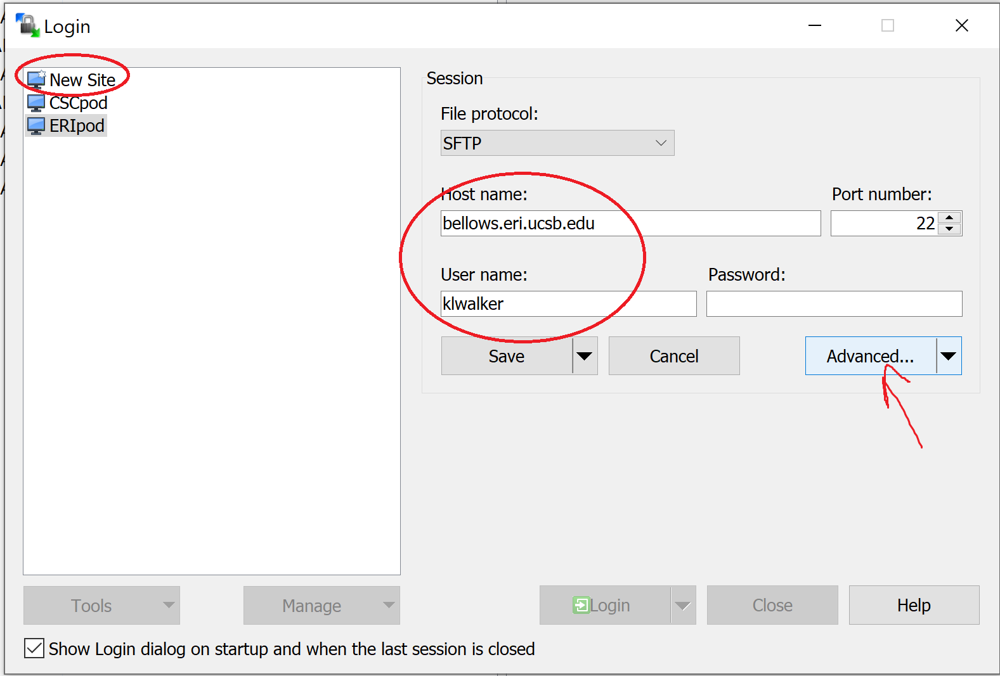
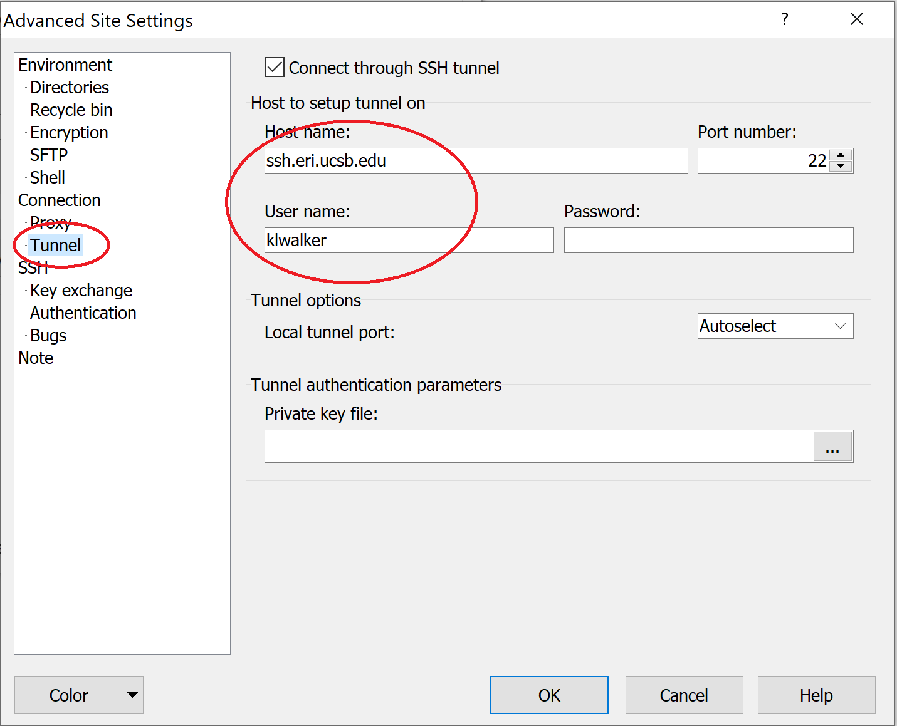

Transfering Files to/from cluster¶
================================================================================================================================
via command line¶
On a Mac, you can transfer small files via the command line using rsync. You can learn more about rsync here, or here to see all command options
These rsync commands are run from a separate terminal
(you do not need to close your open terminal, but open a second one from your computer to run these)
#To Download a file from ERI to local:
rsync -raz --progress <username>@ssh.eri.ucsb.edu:<ERI path/fileName.ext> <local path/fileName.ext>
#To Upload a file from local to ERI
rsync <local path/fileName.ext> -raz --progress <username>@ssh.eri.ucsb.edu:<ERI path/fileName.ext>
On Windows, rsync or a similar file sync tool can be set up on a bash command interface such as git bash or cygwin, but the setup is a bit dodgy and unstable. A more robust option for Windows is to use an all-in-one SSH/FTP client like MobaXterm, or to add an FTP client to the mix.
via FTP client¶
You can also transfer files using a File Transfer Protocol (FTP). If you are already using MobaXterm, you have an FTP included. Just double-click files from the file tree on the left to open them, or drag them onto your computer to copy them. You can also use a dedicated FTP such as WinSCP. (Get WinSCP here). There are also FTP options for Macs, such as [FileZilla(]https://filezilla-project.org/).
As with SSH, you must be logged into a UCSB VPN client first.
Example with WinSCP2: |
|
|---|---|
 |
 |
1 - In “New Site”, enter username and address for bellows. Then click “Advanced” |
2 - In “Tunnel”, enter unsername and address for ERI. Click “OK” and save config. |
You will be prompted to enter your password twice. Now you have a visual directory map from which you can transfer files between your PC and the Cluster
{kind=link}
via Globus online¶
For large file transfers, globus-online is recommended, as it will pick up where it left off if your connection gets interrupted. CSC has a good description of globus-online and getting set up on their website here
Copy processing scripts¶
Copy the four primary processing scripts to the folder from which you will be submitting commands(home/
#if it doesn't already exist, Make code/bash directory:
mkdir ~/code/bash
#Copy scripts over:
cp /raid-cel/sandbox/sandbox-cel/<country>_lc/templates/eostac_dl_<cntry>.sh ~/code/bash/eostac_dl_<cntry>.sh
cp /raid-cel/sandbox/sandbox-cel/<country>_lc/templates/eostac_brdf_<cntry>.sh ~/code/bash/eostac_brdf_<cntry>.sh
cp /raid-cel/sandbox/sandbox-cel/<country>_lc/templates/eostac_pipe_<cntry>.sh ~/code/bash/eostac_pipe_<cntry>.sh
cp /raid-cel/sandbox/sandbox-cel/<country>_lc/templates/eostac_pipe_ts_<cntry>.sh ~/code/bash/eostac_pipe_ts_<cntry>.sh